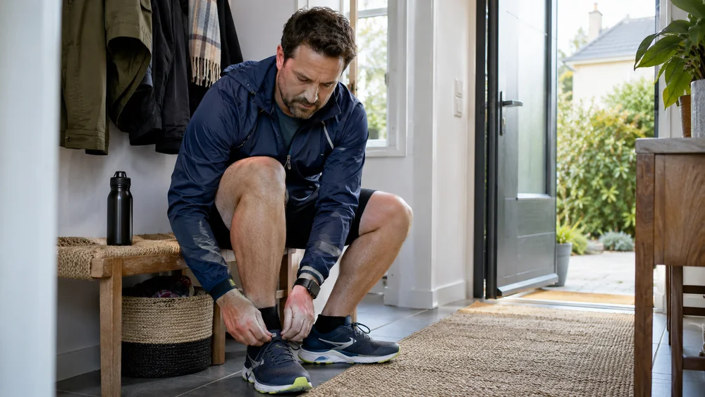
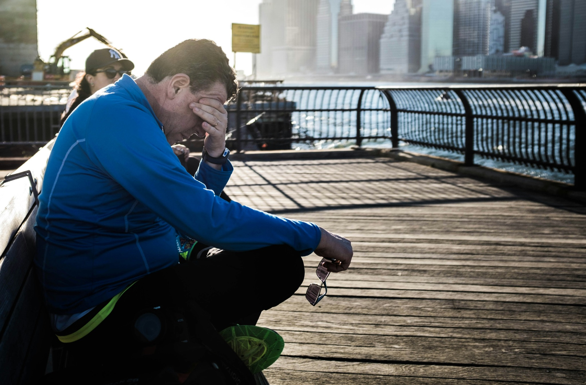
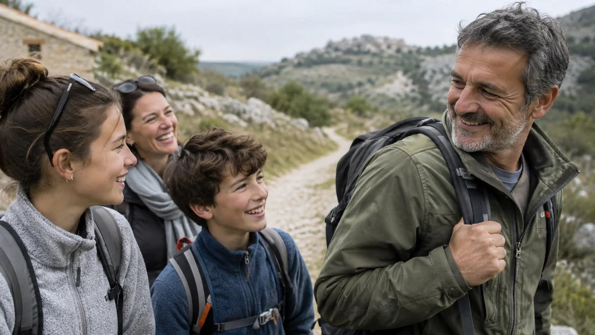
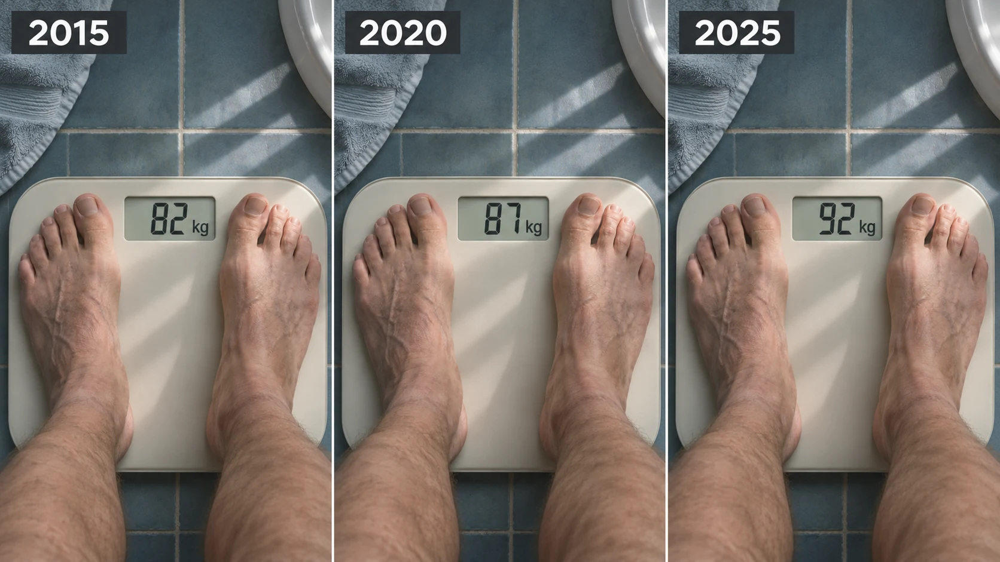
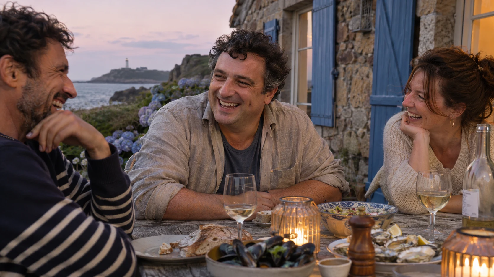
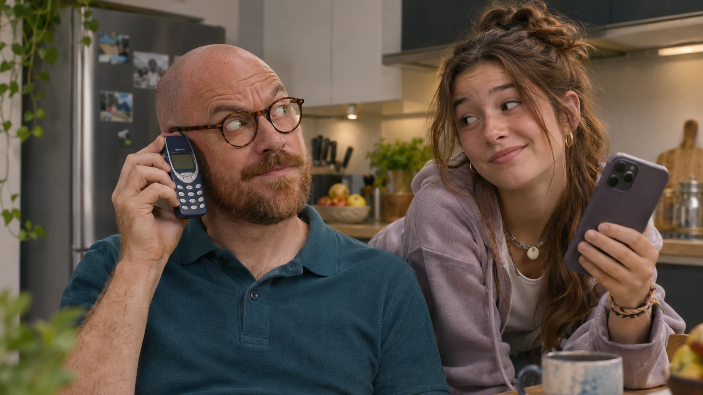
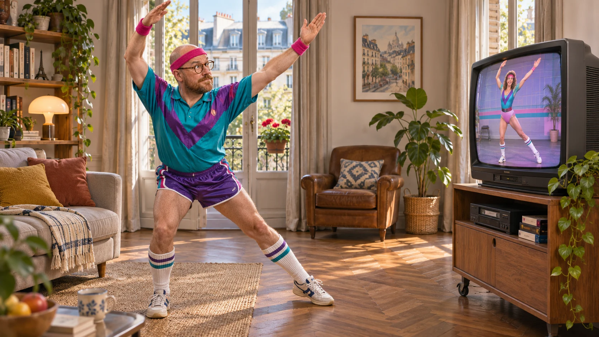

Studio Ludo.
Studio Ludo.
35–45 ans
Le Relanceur
Il se souvient du plaisir qu’il avait à courir. En renouant ses baskets après des mois, il a surtout envie de retrouver ses sensations et de reprendre du temps pour lui.
MyFitRace explique déjà comment s’y prendre. J’ai imaginé quatre concepts pour donner une raison de commencer, puis faire le lien avec la méthode et le suivi.

Stratégie créative
MyFitRace cible les hommes actifs de 35 à 55 ans, CSP+, dont les journées sont déjà bien remplies. J’ai retenu deux motivations qui peuvent coexister à tout âge.

35–45 ans
Il se souvient du plaisir qu’il avait à courir. En renouant ses baskets après des mois, il a surtout envie de retrouver ses sensations et de reprendre du temps pour lui.

45–55 ans
Quand ses proches proposent une randonnée, il aimerait dire oui sans se demander s’il va suivre. Ce qui lui donne envie de reprendre, ce sont les prochaines sorties ensemble.
Big Idea
Reprendre après des tentatives qui n’ont pas tenu, avec une méthode et un accompagnement qui trouvent leur place dans la vie d’aujourd’hui.
Pour celui qui repousse, un moment vécu peut donner une raison de commencer aujourd’hui.
Pour celui qui a décroché, revenir à la charge suppose de pouvoir essayer autrement.
Pour celui qui hésite, savoir qui va l’accompagner rend le premier pas plus simple.
Concepts vidéo



Créer le déclic
Un homme monte sur la balance. À mesure que les années et les kilos défilent, les souvenirs reviennent. Derrière un chiffre, il retrouve aussi un dimanche en famille ou un été entre amis.
Des kilos en moins. Encore des souvenirs à venir.
Retour aux grandes tablées. D’un été à l’autre, les années avancent et le poids affiché reste stable. Il reprend part aux moments qu’il aime. Quatre angles à tester : la sédentarité, les repas partagés, le rythme du travail et les soirs où l’on cherche du réconfort.

Donner envie d’agir
Un père se laisse attraper à chat. Sa fille repart en courant. Cette fois, il a encore assez de souffle pour la suivre.
La victoire, c’est de pouvoir rejouer.
Sur le terrain, il perd le match mais gagne du terrain. Avant un rendez-vous, il enfile sa nouvelle chemise et découvre que son ancienne ceinture est devenue trop grande.


Expliquer la méthode
Pour passer un appel, il sort son vieux Nokia sous les yeux de son ado. Pour se remettre en forme, il retrouve avec le même sérieux le cours d’aérobic de sa jeunesse.
« Tu n’as plus 20 ans. Ta méthode, si. »
Une carte routière dépliée devant le GPS ou un lecteur CD ressorti devant son ado peuvent aussi ouvrir le film. Chaque gag conduit aux contenus MyFitRace sur la méthode.


Rassurer et convertir
Après une séance, un homme retrouve son coach là où il l’attend le moins. Au restaurant, il relève les yeux du menu… et reconnaît son serveur.
« Une vie chargée. Un suivi qui décharge. »
En déplacement, son coach est au volant du taxi. Autre raccord possible : il badge à la sortie du bureau, puis à l’entrée de la salle. La mallette fait place au sac de sport.
Stratégie de diffusion
Je testerais chaque concept auprès d’une audience qui découvre MyFitRace, puis j’adapterais la suite aux signaux observés.
Lancer les quatre angles en acquisition.
Faire varier les situations de vie pour chaque angle.
Identifier ce qui retient l’attention et conduit à découvrir la méthode.
Affiner les accroches, introductions, formats, appels à l’action et pages d’arrivée des variantes les plus prometteuses.
Toucher des audiences similaires et adapter le reciblage au besoin de méthode ou de réassurance.